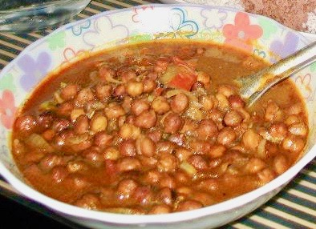

                                    <figure class="cards double">
                                        <figcaption class="caption">
                                            <h1><span style="color: #7951e6;"><strong>Chickpeas Curry (Kadala/Black Chana)</strong></span></h1>  

                                            </p></p><p><strong>Ingredients</strong></p><ul><li>2 cup black chickpeas (soaked overnight)</li><li>Chilli Powder 2 tsp</li><li>Turmeric 1/2 tsp</li><li>Coriander powder 2tbsp</li><li>Cumin seeds &frac12; tsp</li><li>Fennel seeds &frac12; tsp</li><li>Shallots 4 or 5&nbsp;</li><li>Garlic cloves 2</li><li>Cardamom 3</li><li>Onion 1 thinly sliced</li><li>Grated Coconut 1 cup.</li><li>Mustard seeds 1tsp</li><li>Curry leaf few</li><li>Salt as needed</li><li>Oil as needed&nbsp;</li></ul><p><strong>Method</strong></p><p>Pressure cook the chickpeas with the sliced onion, whole cardamom, some curry leaves, &frac14; tsp turmeric, 1 tsp chilli powder and salt. Make sure water level is just above the chickpeas in the pressure cooker. In a pan pour some oil and roast the coconut by adding cumin, fennel, cloves, garlic, shallots. When the coconut starts to brown add coriander powder and keep roasting for a minute and then add 1tsp chilli powder and continue roasting for about 2 minutes. Grind the coconut mixture with minimum water required. Add the coconut mixture to the cooked chickpeas. Cook it for about 2 minutes until the chickpeas and ground mixture all blends in together to form a nice gravy. Add more or less water to adjust the consistency of the gravy as needed. In a pan add oil and splutter mustard seeds, add curry leaf, pour it onto the chickpeas curry.</p>
                                        </figcaption>
                                        